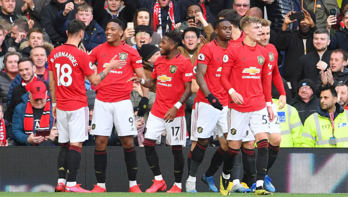
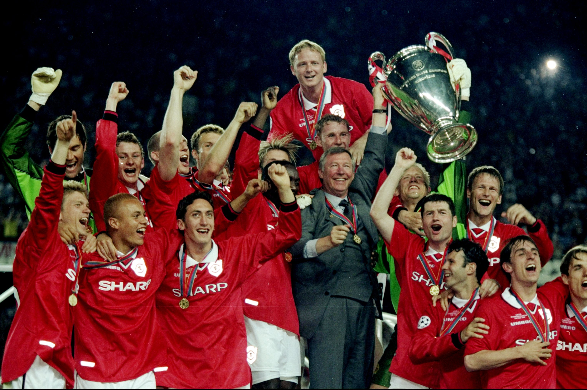

Manchester United Football Club is a professional football club based in Old Trafford, Greater Manchester, England, that competes in the Premier League, the top flight of English football. Nicknamed "the Red Devils", the club was founded as Newton Heath LYR Football Club in 1878, changed its name to Manchester United in 1902 and moved to its current stadium, Old Trafford, in 1910.
Manchester uniteds current squad is De Gea, Maguire, Luke Shaw, Wan Wissaka, Lindelof, Pogba, Sancho,Rashford, Greenwood, Cavani.
Manchester United have won more trophies than any other club in English football, with a record 20 League titles, 12 FA Cups, five League Cups and a record 21 FA Community Shields. United have also won three European Cups/UEFA Champions Leagues, one UEFA Europa League, one UEFA Cup Winners' Cup, one UEFA Super Cup, one Intercontinental Cup and one FIFA Club World Cup. In 1998 and 99, the club became the first in the history of English football to achieve the continental European treble.
Manchester United has had many great players over the years and some of them are Cristiano Ronaldo, David Beckham, Ryan Giggs, Andy cole, Teddy sheringham, Nemanja Vidic,Ruud van nistelrooy, Denis Irvin, George Best, Paul Scholes, RIo ferdinand, David de gea, GAry neville, Peter schmeichel, Edwin Van der saar, roy keane, wayne rooney, eric cantona, Denis law, Bobby charlton and many more. The most successful out of all these players are cristiano ronaldo, ryan giggs and paul scholes. Ronaldo has won 5 ballon d’ors which is the second highest in football history. He was at United from 2003-2009. In 2009 he transferred to Real MAdrid for 80 million euros which was the highest fee for any player at the time. WHen he left Sir Alex said this about him “Cristiano has been a marvellous player for Manchester United. His contribution has been a major factor in the club’s success in that time and his talent, his ability to entertain and his infectious personality have enthralled fans the world over."At United Ronaldo won 1 champions league and 3 premier leagues. Ryan giggs has 34 career trophies,making him the most decorated player in Manchester United but also in the world. He won 13 premier league titles, two champions leagues, four fa cups, one UEFA super cup, one fifa club world cup, one intercontinental cup,9 fa cups and 3 football league cups. Paul scholes has the most appearances in football history, 700 which were all at United and in those he scored over 150 goals. With United, Scholes won 25 trophies including 11 Premier League titles (more than any other English player) and two UEFA Champions League titles.

The team's most successful manager was Sir Alex Ferguson and he was United’s manager from 1986-2013. He is considered one of the greatest managers of all time having won more trophies(38) than any other manager. He won 13 premier league titles, 5 fa cups and 2 UEFA champions leagues in his time at Manchester United. Manchester United has struggled to find a stable manager since the retirement of Sir Alex Fergusson. The team played 1500 matches under him between 1986-2013. However, they have experimented with 5 managers since then but havent found a stable solution yet. David Moyes, who succeeded Sir Alex lasted only one season. Ryan Giggs was a caretaker manager for a few matches and made way for Louis Vaan Gaal from Netherlands, who was the coach for two seasons but the results were not satisfactory. Manchester United hired Jose Mourinho, a celebrated Potuguese manager in 2016. Even he had to leave in the middle of his third season due to poor results. Then came the current manager, Ole Gunnar Solskjaer. He has now been with the team for more than two seasons and the results have improved. They finished 3rd in the 2019/20 season behind Liverpool and Manchester City and at the halfway mark of the current season, they are leading the point table with a reasonable shot at being EPL champions after a decade.⚽